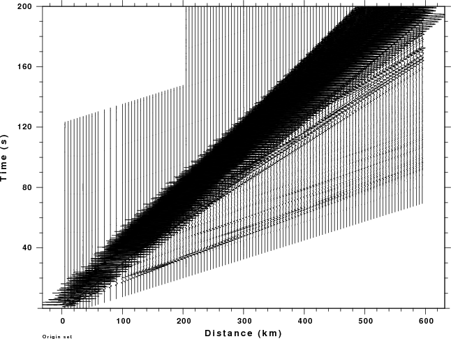
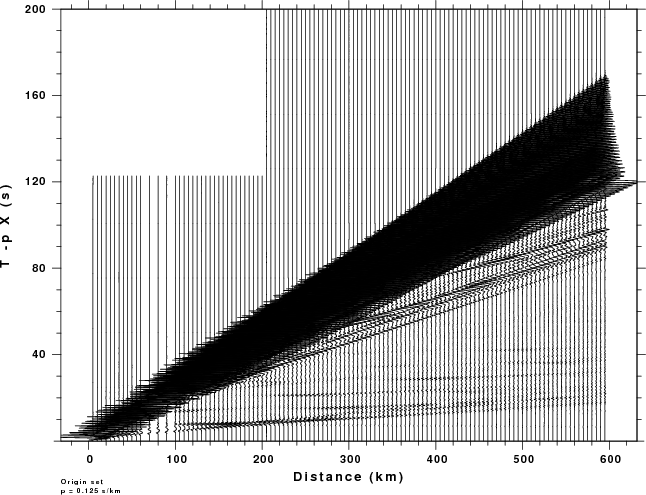
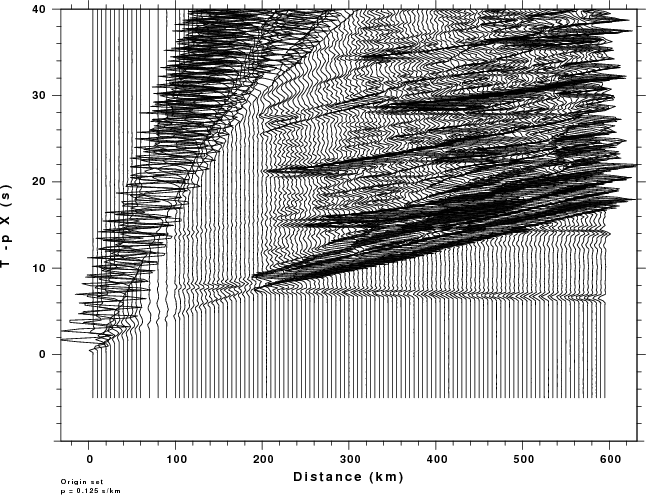

Professor Robert B.Herrmann:
Hi,I am a student from China, and I am not major in Seismology, now I am readding Peter M.Shearer's "Introduction to Seismology",I have some trouble to understand
"reduce velocity", I search with google then find your web,in Ass10.pdf,your said "The advantage is that small variations in observed data can now be seen on this expanded plot",
it's easy to understand. But I donot know how you get the velocity Vred ,just assign it or calculate form data to obtain it ?
Maybe It's rude to ask you this kind of simple question, but it really bothers me for a long time, I cannot find another way to get more information.
Hope for your reply.
a student from China
The reduced velocity is a way to focus on first arrival information in a detailed manner. Mathematically this means that instead of plotting seismic traces as a function of distance, r, and time, t, e.g., s(r,t), the traces are actually plotted with the beginning of the time axis shifted, e.g., as s(r,t-r/Vred) where Vred is the reduction velocity.
Some simple images will illustrace this concept. I will present three figures. The first figure shows synthetic seismograms for an explosion source at a depth of 0.5 km in the CUS crustal model at distances of 0 - 595 km.

These traces are plotted such that the peak amplitudes are plotted the same way. You can see the first arrival, but not very clearly because the first arrival lasts less than one second and the trace display shows 200 seconds.
We now use a reducting velocity of 8 km/sec and plot the traces at 'reduced time' of t - 0.125 r where the ray parameter p= 0.125 = 1/8.0 sec/km. This is shown in the second figure.

In this plot, we still plot the full 200 seconds. Any feature that is horizontal travels with a phase velocity of 8 km/sec.
Even this presentation does not permit us to focus on the first arrival. However if we limit the display to values of t - 0.125 r ranging from -10 to 40 seconds, we get the next figure.

With this expanded display, we clearly see the first arrivals and reflected arritals.
By presenting the information in this manner, one can quickly focus on the first arrival which can be used to define the velocity model.
Another use of the reduction velocity is start the synthetic seismograms just before the first arrival, which is how the synthetics shown in the first figure were comptued. This technique saves a lot of computer time and gives nicer synthetics.